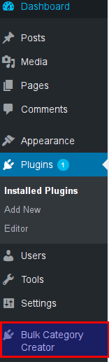
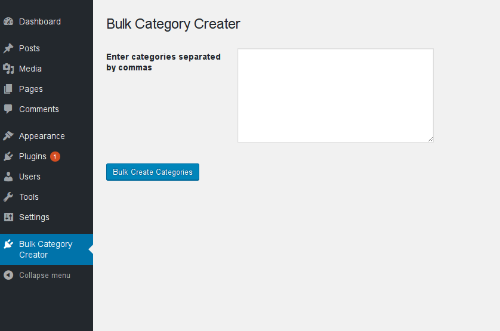
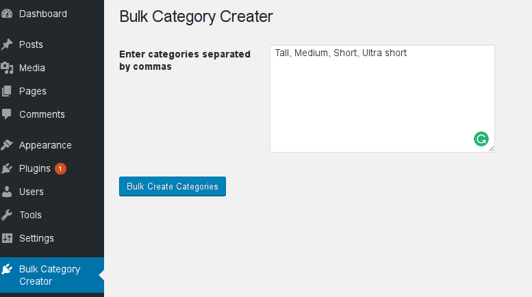
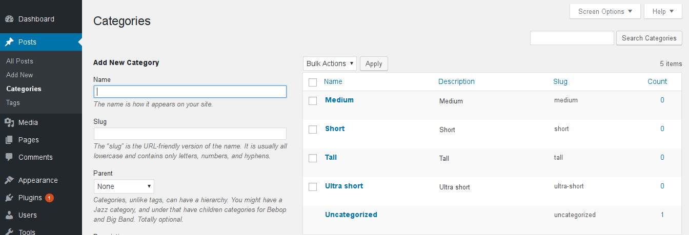

In this tutorial we are going to take a look into how to create a basic Wordpress Plugin. Our plugin will have an admin page with a basic form element and a submit button and will perform a simple task of creating bulk categories in one go.
A lot of times, when we are developing a website or blog on wordpress, we would need to create a lot of categories. Sometimes, it becomes a pain to create categories one by one. So, here we are going to build a plugin which allows a list of comma separated categories to be copy pasted in a textarea. And on clicking a button, all the categories are loaded into the wordpress categories section in a single go. So, you do not need to sit and click on the Add New Category button for every category that has to be created.
Plugins in wordpress are basically php scripts which allow you to change or add new features to your existing wordpress installation. It could be something really simple like the Hello Dolly plugin or something really advanced like the Jetpack or Google Analytics plugin.
So, why should you build a plugin?
If there is one thing that a wordpress developer should not do, it is to not hack the wordpress core source files. Then, how else would you add new features to your wordpress website? The answer is plugins. Plugins are basically a set of php script files which allow you to add or change your current wordpress features.
Also, by learning how to create plugins, you get to learn more about Wordpress and that in turn makes you a better Wordpress Developer.
In order to create a plugin, you have to create a particular folder structure for your plugin. Every plugin has a a directory name and one or more php files inside it. The layout of a plugin structure looks like this.
Inside your wordpress directory structure, you will find a directory called wp-content. Inside the wp-content will be a directory called plugins. Your folder structure would look similiar to this
The very first step in creating a plugin is to navigate to the wp-content directory of your local wordpress installation and inside the directory navigate to the plugins directory. Inside the plugins directory create a new directory called bulk-category-creator. Once, you have created the directory, create a file named bulk-category-creator.php. Make sure, the directory name and the php file name are the same.
Now, open your text editor (I prefer Sublime Text) and copy paste the following code into it
Every plugin has a section of code describing its description, version, author name and licence. This is usually found in the header of the plugin’s main file. In our case, it is found in bulk-category-creator.php.
This section is called the Meta-data of the plugin.Let us dissect the above content of code line by line.
Plugin Name: Here is the name given to the plugin, in our case we call it the Bulk Category Creator
Plugin URI: This is a link to where the plugin can be found on the internet for download purposes. It can be found in the wordpress.org archives or in another location.
Description: This is the section where you can describe what actions the plugin performs.
Version: Specifies the version of the plugin
Author: Name of the author or developer who created this plugin
Author URI: Link to the author’s address on the internet
License: The license under which this plugin is released.
Before jumping into coding our plugin, let us understand some basic Wordpress Hooks. Basically, in Wordpress there are two main types of hooks: Actions and Filters. Since, this is a basic plugin development tutorial, we shall not go into detail but basically this is how they differ.
Actions: Actions are used when you add something when an event has occured, Example : to tweet an article when a new post has been published.
Filters: Filters are used when you have to change some data or process it.
Now that you have understood the basics, let us start coding our plugin.
This line of code hooks the admin_menu to the function rfr_CategoryCreatorMenu
The admin_menu function is used to add submenu or menu options to our Wordpress Admin Dashboard. Once that has been done, write down the next snippet of code.
If you observe the above snippet carefully, you shall see that we have added a function rfr_CategoryCreatorMenu to our code. Let us dissect the lines of code one by one.
We have used the name rfr_CategoryCreatorMenu in our code. You may notice the prefix rfr_ that I have used. Always, when creating custom plugins for Wordpress, make sure your function has a unique name. Along with making the code cleaner, this resolves conflicts which may arise due to different plugins using the same name.So, always ensure that your functions are prefixed by a unique name. In this case I have used rfr_ as my prefix, you can use whatever you want. You can use the first three letters of your name or your company name.
Okay, now inside the rfr_CategoryCreatorMenu function we have added a add_menu_page function.
The add_menu_page function adds a top level menu page. This function has a number of parameters passed into it.
First parameter: This is the content of the title of the plugin page.
Second Parameter: This is the name of the Plugin as it appears in the Admin Dashboard. In our case, it shows Bulk Category Creator
Third parameter: This is the permission restriction for the plugin. In our case only administrators can access or use our plugin.
Fourth parameter: This is the slug used to refer to this menu
Fifth parameter: This is the function which should be invoked in order to display the contents of the page.
Sixth parameter: This is the URL to the icon to be displayed besides our menu in the Admin Dashboard. In our case we have added ‘dashicons-admin-plugin’ which is part of an icon-set that comes along with Wordpress. Refer https://developer.wordpress.org/resource/dashicons for more icons that come along with the default Wordpress bundle.
Now, if you observe your Admin Dashboard, you can see that a new Menu called the Bulk Category Creator has been created.
Next, We have to add another hook to our admin_init action.
We shall come back to it in a moment.
Now the next part is to design the front-end of the admin dashboard. You might have noticed that, in the add_menu_page function we have pointed to a function rfr_CategorySettingsPage .
Let us define this function
This is where we define the front end for the plugin’s admin page.
Basically, it consists of a form with a textarea. It is in this textarea that we are going to copy paste our categories in a comma separated list.
This section is just basic HTML where a form is defined and inside a table layout a textarea has been specified.
Just ensure, you do not forget to write the settings_fields and do_settings_sections just below the form declaration.
Now, if you try navigating to our newly created menu “Bulk Category Creator” you can see the following
Tada! We have successfully created the front-end of our plugin. We have added an html form element to our plugin’s dashboard.
Now, the only thing left to do is to code the necessary programming which allows us to import bulk categories on a single attempt.
The above content is basic php. Let us look into it in detail:
$returnedStr recieves the value submitted from the textarea inside the form element.
$trimmed trims off the empty spaces on the left and right sides of the string.
The php explode function is used to convert the comma separated values into $categories_array variable.
Next, we use a foreach loop to browse the contents of the $categories_array variable.
Here, we loop inside each variable that is present inside the $categories_array
$catString gets the value of $value. The suffix .’ ‘ is added to make sure the value is a string.
In the next line
$term = term_exists($value, ‘category’);
We have used a wordpress hook term_exists to make sure that existing category names are not re-added to the category list. So, for instance if a category called ‘tall’ is already present, even if we try adding ‘tall’ into the bulk category creator textarea, it wont be re-added to the list of categories.
In the next line, we have used conditional checking to make sure already existing categories are not re-added to our list of categories
The line if($term ==0 || $term == null) ensures that.
Next, we pass the value to our create_category function
Inside this function we do the following
$trimmedValue = trim($value);
We pass the $value to our php trim function to trim whitespaces off our value. We also create a hyphenated value for use in our slug by writing $hyphenatedValue = str_replace(" ", "-", $trimmedValue);
Here, we use the php function str_replace to replace the spaces in between our word to hypens. For example if the category we added is Must Watch we get the $hyphenatedValue as Must-Watch.
Next, we use another Wordpress hook the wp_insert_term to add our trimmed value, the taxonomy, and an array consisting of the description and our hyphenated slug.
The function wp_insert_term function has 3 parameters.
First parameter : the value to be inserted
Second parameter: The taxonomy required. In our case ‘category’
Third parameter: An array consisting of the description and our slug
The Complete code is listed below
Now, navigate to Admin Dashboard>Bulk Categories Creator and enter a list of categories .
In this example, I’m adding Tall, Medium, Short, Ultra short into the textarea
Now, click on Bulk Create Categories
Then, navigate to Admin Dashboard > Posts > Categories and you can see that our categories have been added to the list of Categories.
Success, Our list of categories have now been created in one go. Note that under the slug section our category ‘ultra short’ has been hyphenated into ultra-short.
So, by far in our tutorial, you have successfully created your first Wordpress Plugin, the Bulk Category Creator Plugin. If you have followed through this tutorial, you would now have a working Wordpress plugin in your hand.
If you want to distribute this plugin to your friends, just compress the plugin directory to a .zip file and you are done.
Thank you, for following this tutorial, I’ll be back with more Wordpress Plugin development tutorials. Till then, bubye :)